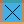
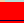

Important
This section applies to VGA games only
VGA Palette Editor¶
Overview¶
256 color VGA support started with SCI1. While EGA used a fixed (unless you count dithering) 16 color palette, VGA games use a custom 256 color palette.
However, since only 256 colors are supported on-screen at one time, this does impose some restrictions. You can’t use a custom palette for every view resource. In general, the Sierra VGA games deal with this by reserving a small section of the palette as “fixed” colors for the Actors and Props in a game, leaving the rest to be used for the pic backgrounds. The SCI 1.1 template game reserves the bottom 64 colors as “fixed”.
The Palettes tab in the game explorer will show the “solitary” palette resources used in the game. Most often though, you will be editing palettes that are attached to pic (and less commonly) view resources. These are not shown in the Palettes, but instead in the view and pic editors.
Palette 999¶
Palette number 999 is the default palette of the game, and generally contains just the fixed colors. This is what is used to render views in SCICompanion by default.
Palette Editor¶
The Palette Editor comes in two forms: a dialog used for editing palettes that are part of pics or views, and a “document view” used for editing the solitary palette resources. The differences are small, so let’s look at the dialog form:
The Palette Editor dialog
Color selection¶
To select colors in the palette, you can left-click on them. You can also select ranges with SHIFT-click, and toggle selection with CTRL-click. The numbers for the palette indices that are selected are shown on the right side of the editor. These can be useful for when you want to write scripts that modify or animate color ranges of the current palette.
Depending on what you select, the options available to you will change. For instance, the Gradient and Export Range buttons are enabled when you select a continguous range of colors.
Edit color¶
This lets you directly set the color for the selected palette index (or indices). It invokes a color chooser dialog.
Adjust¶
This lets you change the hue, saturation, lightness or tint of the selected colors. This is useful if you want to create a night scene, for instance: you can just select all the palette colors and reduce their lightness and add a blue tint. Then save the palette as a new solitary palette resource which you can load and apply in script.

A scene from King’s Quest 6 with its palette adjusted.
Gradient¶
This sets the range of selected colors to a color gradient (A-B or A-B-A). This can be useful to set up palette cycling.

Setting a gradient for a range of palette indices.
Import, Export, Import At, Export Range¶
You can export and import the palette to/from a .pal file (this is a common palette file format used on Windows). This lets you edit it in an external editor. You can also export just the currently selected range, or you can import the colors in a .pal file starting from the currently selected color.
Add as resource¶
This is only available in the Palette Editor for pics and views. Since only one palette can be attached to a pic background, this is useful if you want to show the pic with different palettes. For example, if you wanted to create a night scene for a pic background, you could “Add as resource” that pic’s palette - that takes the palette embedded in the pic and saves it as a solitary palette resource. Then, you could edit that palette resource and adjust it to be darker and bluer. Then in script that palette resource could be applied to the current pic background.
Palette cycling¶
The palette cycling controls are only available in the Palette Editor for pics and views, since otherwise there would be nothing to show. This will let you preview the effect of cycling the selected range of colors on the current view or pic. The cycling would be accomplished by Palette(palANIMATE ...) in script. See palette cycling for more information.
Markings on the colors¶
You may notice different markings on each color in the palette:
- An X on a color  means that the palette does not define that index at all.
- A thin underline  means that this color is fixed (as would be the lower 64 colors in the template game, for instance). This probably affects how SCI combines palettes when multiple palettes are combined, but its exact functionality is unclear.
- A dot in the middle of a color
 means that this color index actually appears in the view or pic to which this palette is attached (you won’t see this when looking at solitary palettes obviously).
means that this color index actually appears in the view or pic to which this palette is attached (you won’t see this when looking at solitary palettes obviously).
You can use the Used color and Fixed checkboxes to control the first two options.